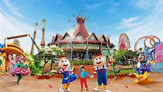

Dufan
Dunia Fantasi atau yang lebih populer dengan sebutan Dufan, pertama kali dibuka untuk umum pada 29 Agustus 1985 dan merupakan theme park pertama yang dikembangkan oleh Perseroan dan telah memiliki sertifikat ISO 9001:2015 sejak Februari 2017.
Selain menjadi pusat hiburan outdoor, Dufan juga merupakan kawasan edutainment fisikia terbesar di Indonesia yang memanjakan pengunjung dengan Fantasi Keliling Dunia, melalui wahana permainan berteknologi tinggi, yang terbagi dalam 9 (Sembilan) kawasan yaitu Indonesia, Jakarta, Asia, Eropa, Amerika, Yunani, Hikayat, Kalila dan Fantasy Lights.
Fasilitas umum untuk pengunjung : Free Wifi, Charger Point, Toilet bersih disetiap kawasan dan wahana, Baby Care Room, Mushola dan Masjid, P3K & Ambulance.